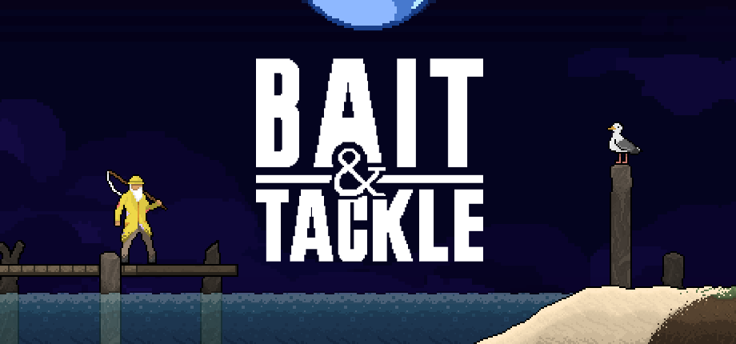

Overwatch

I worked on the Overwatch Hero Design team during the summer of 2025 as part of Blizzard's internship program.
I was responsible for creating Perks for Overwatch 2's Season 18, in which I shipped three perks: Precision Fusion for D.VA, Explosive Impalements for Hazard, and Sky Spy for pharah. In addition, I worked on the Advanced Hero Information system that debuted in the same season, I implemented controller rumbles for every perk added in season 18, tested and prototyped unreleased heroes, implemented Vendetta's custom game options, worked on post-match accolades, implemented and iterated on my own custom hero prototype, and more.'
Much of what I worked on has now been released, and is available for free in Overwatch.